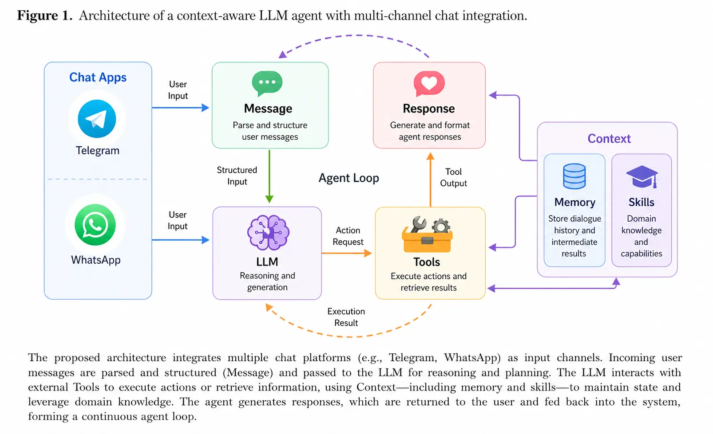

Ultra-lightweight
~55k LOC, zero monolithic orchestration layer. Stable long-running behavior — no microservices, no broker, no Kubernetes.
Open source · MIT licensed · ~55k LOC core
One Python process listens to Slack, Telegram, Discord, WhatsApp, Matrix, Teams, email, a WebSocket WebUI and an OpenAI-compatible HTTP API — all multiplexed by one calm agent loop.


Why Pythinker
~55k LOC, zero monolithic orchestration layer. Stable long-running behavior — no microservices, no broker, no Kubernetes.
Slack, Telegram, Discord, WhatsApp, Matrix, MS Teams, email, WebSocket WebUI, plus an OpenAI-compatible HTTP API — one agent loop multiplexes them all.
25+ LLM providers behind one interface — Anthropic, OpenAI, Azure OpenAI, OpenAI Codex, GitHub Copilot, DashScope, MiniMax, VolcEngine, Moonshot, DeepSeek, StepFun, and more.
Two-phase “Dream” process consolidates long-term memory into MEMORY.md / SOUL.md / USER.md, auto-versioned with pure-Python git.
Bundled skills (GitHub, cron, weather, tmux, summarize, skill-creator…) plus first-class Model Context Protocol tool access.
Every shell command is wrapped in bubblewrap on Linux. SSRF block-lists guard outbound HTTP. File tools enforce workspace boundaries.
Architecture
Pythinker stays lightweight by centering everything around a small agent loop: messages come in from chat apps, the LLM decides when tools are needed, and memory or skills are pulled in only as context — instead of becoming a heavy orchestration layer.

docs/ARCHITECTURE.md for the forensic walkthrough.
Agent Design Style
Five primitives keep the runtime predictable under load — readable end-to-end, restartable mid-turn, and small enough to audit in an afternoon.
Every channel publishes onto one inbound queue; one outbound queue dispatches replies. The agent loop never knows which platform a message came from.
Subagent results and follow-on messages fold into the in-flight turn instead of waiting for the next user message.
Bubblewrap on Linux, SSRF block-lists on every HTTP fetch, workspace boundary enforcement on file tools.
A scheduled agent reads history.jsonl and rewrites MEMORY.md / SOUL.md / USER.md. Auto-versioned via pure-Python git.
Mid-turn state is checkpointed into session metadata so a restart resumes exactly where it stopped.
Read the runtime spine end-to-end in
docs/ARCHITECTURE.md.
Install
$ uv tool install pythinker-aiDefault config is wired for ChatGPT OAuth — no API key needed to start.
$ uv tool install pythinker-ai
$ pythinker --version$ pipx install pythinker-ai$ python -m pip install --user pythinker-ai$ git clone https://github.com/mohamed-elkholy95/Pythinker-ai
$ cd Pythinker-ai && uv sync && uv run pythinker$ pythinker onboard
$ pythinker provider login openai-codex
$ pythinker agentChannels
Add a new channel by implementing one interface and registering it. ~150 lines for most adapters.
What people run
Discovery, insights, trends — long-running cron tasks summarize, alert, and learn what you actually care about.
Develop, deploy, and scale with sandboxed shell tools, workspace-bounded file edits, and MCP integrations.
Schedule, automate, organize — Telegram in, calendar out; the agent runs on a tiny VM or your home server.
Learn, remember, reason — Dream consolidates history into long-term memory you can read, edit, and version.
pythinker serve exposes /v1/chat/completions; point any OpenAI SDK at it and keep your data local.
Same memory across Discord, email, and WebUI — the agent remembers you everywhere it's reachable.
Roadmap
See and hear — images, voice, and video at the agent boundary.
Never forget important context across sessions and channels.
Multi-step planning and reflection inside the small core loop.
Calendar and other day-to-day surfaces, kept thin and pluggable.
Learn from feedback and mistakes — the Dream loop, made smarter.
Pick an item and open a PR on the dev branch.